# Load libraries
library("gplots")##
## Attaching package: 'gplots'## The following object is masked from 'package:stats':
##
## lowesslibrary("ggplot2")
library("RColorBrewer")
library("scales")
library("edgeR")## Loading required package: limmalibrary("R.utils")## Loading required package: R.oo## Loading required package: R.methodsS3## R.methodsS3 v1.7.1 (2016-02-15) successfully loaded. See ?R.methodsS3 for help.## R.oo v1.20.0 (2016-02-17) successfully loaded. See ?R.oo for help.##
## Attaching package: 'R.oo'## The following objects are masked from 'package:methods':
##
## getClasses, getMethods## The following objects are masked from 'package:base':
##
## attach, detach, gc, load, save## R.utils v2.3.0 (2016-04-13) successfully loaded. See ?R.utils for help.##
## Attaching package: 'R.utils'## The following object is masked from 'package:utils':
##
## timestamp## The following objects are masked from 'package:base':
##
## cat, commandArgs, getOption, inherits, isOpen, parse, warningslibrary("plyr")
library("limma")
library("EDASeq")## Loading required package: Biobase## Loading required package: BiocGenerics## Loading required package: parallel##
## Attaching package: 'BiocGenerics'## The following objects are masked from 'package:parallel':
##
## clusterApply, clusterApplyLB, clusterCall, clusterEvalQ,
## clusterExport, clusterMap, parApply, parCapply, parLapply,
## parLapplyLB, parRapply, parSapply, parSapplyLB## The following object is masked from 'package:limma':
##
## plotMA## The following objects are masked from 'package:stats':
##
## IQR, mad, xtabs## The following objects are masked from 'package:base':
##
## anyDuplicated, append, as.data.frame, cbind, colnames,
## do.call, duplicated, eval, evalq, Filter, Find, get, grep,
## grepl, intersect, is.unsorted, lapply, lengths, Map, mapply,
## match, mget, order, paste, pmax, pmax.int, pmin, pmin.int,
## Position, rank, rbind, Reduce, rownames, sapply, setdiff,
## sort, table, tapply, union, unique, unsplit## Welcome to Bioconductor
##
## Vignettes contain introductory material; view with
## 'browseVignettes()'. To cite Bioconductor, see
## 'citation("Biobase")', and for packages 'citation("pkgname")'.## Loading required package: ShortRead## Loading required package: BiocParallel## Loading required package: Biostrings## Loading required package: S4Vectors## Loading required package: stats4##
## Attaching package: 'S4Vectors'## The following object is masked from 'package:plyr':
##
## rename## The following object is masked from 'package:gplots':
##
## space## The following objects are masked from 'package:base':
##
## colMeans, colSums, expand.grid, rowMeans, rowSums## Loading required package: IRanges##
## Attaching package: 'IRanges'## The following object is masked from 'package:plyr':
##
## desc## The following object is masked from 'package:R.oo':
##
## trim## Loading required package: XVector##
## Attaching package: 'XVector'## The following object is masked from 'package:plyr':
##
## compact## Loading required package: Rsamtools## Loading required package: GenomeInfoDb## Loading required package: GenomicRanges## Loading required package: GenomicAlignments## Loading required package: SummarizedExperiment##
## Attaching package: 'ShortRead'## The following object is masked from 'package:plyr':
##
## id## The following object is masked from 'package:R.utils':
##
## countLinessource("~/Reg_Evo_Primates/ashlar-trial/analysis/functions.R")
# Load the raw counts
counts_genes <- read.delim("~/Reg_Evo_Primates/ashlar-trial/data/counts_genes.txt")
dim(counts_genes)## [1] 30030 48# Load Sample information
samples <- read.csv("~/Reg_Evo_Primates/ashlar-trial/data/Sample_info_RNAseq.csv")
labels <- paste(samples$Species, samples$Tissue, sep=" ")
# We previously determined with SNP calling (via GATK) that the sample Human 1 Heart is Human 1 but most likely a Human 1 Liver. Therefore, we will remove H1H
counts_genes <- counts_genes[,-17]
samples <- samples[-17,]
labels <- paste(samples$Species, samples$Tissue, sep=" ")
# Eliminate the lowly expressed genes (see Filtering analysis for more information)
# Find the TMM
dge_original <- DGEList(counts=as.matrix(counts_genes), genes=rownames(counts_genes), group = as.character(t(labels)))
dge_original <- calcNormFactors(dge_original)
tmm_cpm <- cpm(dge_original, normalized.lib.sizes=TRUE, log=TRUE, prior.count = 0.25)
head(tmm_cpm)## C1H C1K C1Li C1Lu C2H C2K
## ENSG00000000003 4.577905 6.458067 8.266553 5.435440 4.6399682 6.022339
## ENSG00000000005 2.426523 -1.569756 -1.405992 -3.331480 0.6181423 -1.333290
## ENSG00000000419 5.850838 5.191558 5.943281 5.432423 5.6343469 5.046183
## ENSG00000000457 4.568934 5.188318 5.908310 4.926437 4.7873635 5.235192
## ENSG00000000460 1.515520 1.843447 2.085975 2.262878 1.6139287 1.914064
## ENSG00000000938 5.620597 3.793194 5.096963 7.504597 2.4864784 4.123918
## C2Li C2Lu C3H C3K C3Li
## ENSG00000000003 8.007975 4.528713 4.906720 6.35989436 7.721755
## ENSG00000000005 -2.063745 -2.063306 -1.325874 -0.07344781 -3.796207
## ENSG00000000419 5.791946 5.164072 5.667325 5.13300315 6.351074
## ENSG00000000457 6.523773 4.950139 4.609998 5.15783261 6.435445
## ENSG00000000460 2.303378 1.987747 1.571729 1.41524770 2.281625
## ENSG00000000938 5.366960 8.047660 4.956491 4.17708758 5.141829
## C3Lu C4H C4K C4Li C4Lu H1K
## ENSG00000000003 5.836125 4.210680 6.456261 8.378765 5.372745 6.815098
## ENSG00000000005 -3.811821 3.822937 -1.523086 -3.673311 -2.521990 4.863477
## ENSG00000000419 5.556851 5.760344 5.210484 5.806579 5.264305 5.538591
## ENSG00000000457 5.129130 4.620220 4.975769 6.522540 5.206329 4.235449
## ENSG00000000460 2.084845 1.431520 1.779357 2.131942 2.419215 2.717219
## ENSG00000000938 7.120486 3.613875 3.573790 4.505428 7.660281 4.009787
## H1Li H1Lu H2H H2K H2Li
## ENSG00000000003 6.556565 5.017756 3.715237 7.1367653 6.628779
## ENSG00000000005 -6.803449 -2.236364 -3.893541 0.3983141 -6.803449
## ENSG00000000419 6.063479 5.729603 5.640512 5.3928808 5.828277
## ENSG00000000457 4.934305 4.420875 3.440821 4.0896792 4.440666
## ENSG00000000460 4.969815 3.236803 1.926242 1.9097705 2.647717
## ENSG00000000938 4.460420 7.796908 5.594227 3.6715300 5.980133
## H2Lu H3H H3K H3Li H3Lu
## ENSG00000000003 4.134172 3.4924818 7.02915140 7.656852 5.192738
## ENSG00000000005 -6.803449 -6.8034489 0.01948416 -6.803449 -6.803449
## ENSG00000000419 5.266516 5.6997772 5.79252484 6.137729 4.912490
## ENSG00000000457 4.154920 4.3895028 4.66037953 4.914637 3.901832
## ENSG00000000460 2.506159 -0.1267628 2.92821223 3.158698 2.359990
## ENSG00000000938 6.921957 4.0457143 2.58075164 5.661979 6.815378
## H4H H4K H4Li H4Lu R1H
## ENSG00000000003 4.309449 6.3278935 6.502999 4.441313 4.287983
## ENSG00000000005 -2.875477 -0.3994824 -6.803449 -4.372005 -6.803449
## ENSG00000000419 6.269823 5.5642000 5.747041 5.328283 5.395688
## ENSG00000000457 3.337615 4.0435944 5.089012 4.151503 4.216825
## ENSG00000000460 1.655079 1.9392676 3.050663 2.582280 1.216076
## ENSG00000000938 4.943776 3.7769670 6.812001 8.226866 1.768889
## R1K R1Li R1Lu R2H R2K
## ENSG00000000003 6.876427 8.2484842 5.873253 4.597962 7.090748
## ENSG00000000005 -6.803449 -3.5714845 -2.937362 -2.940118 -2.382257
## ENSG00000000419 5.335332 5.7401085 4.844764 5.268132 5.000397
## ENSG00000000457 4.968352 5.0577118 4.795080 4.284276 5.111398
## ENSG00000000460 1.498811 -0.2588692 2.438262 1.388391 1.276589
## ENSG00000000938 2.507734 3.7183538 6.473029 2.299659 2.638321
## R2Li R2Lu R3H R3K R3Li
## ENSG00000000003 8.600746 5.606713 4.457832 7.128831 8.170499
## ENSG00000000005 -1.244301 -4.910409 -4.240968 -4.509770 -3.147767
## ENSG00000000419 5.683575 4.833502 5.451756 5.330145 5.958378
## ENSG00000000457 5.471576 5.217667 4.230240 5.102576 5.327609
## ENSG00000000460 1.457402 2.346962 1.645341 1.837197 1.381784
## ENSG00000000938 3.632703 6.535424 2.859562 2.229997 3.604390
## R3Lu R4H R4K R4Li R4Lu
## ENSG00000000003 5.454412 4.833487 7.058675 7.690207 5.357887
## ENSG00000000005 -3.797088 -2.525255 -2.089636 -4.580657 -6.803449
## ENSG00000000419 4.957033 5.368345 5.179974 5.449035 5.038406
## ENSG00000000457 5.166351 4.450659 5.108534 5.303078 4.824999
## ENSG00000000460 2.578123 1.029239 1.473680 1.518987 2.844173
## ENSG00000000938 6.846810 2.415779 2.274836 4.494167 6.831500# Assign all 12 tissue-species pairs
chimp_hearts <- c(1, 5, 9, 13)
chimp_kidneys <- c(2,6,10,14)
chimp_livers <- c(3,7,11,15)
chimp_lungs <- c(4,8,12,16)
human_hearts <- c(20,24,28)
human_kidneys <- c(17,21,25,29)
human_livers <- c(18,22,26,30)
human_lungs <- c(19,23,27,31)
rhesus_hearts <- c(32,36,40,44)
rhesus_kidneys <- c(33,37,41,45)
rhesus_livers <- c(34,38,42,46)
rhesus_lungs <- c(35,39,43,47)
# Save the counts
# Raw counts = log2(counts_genes)
# CPM = tmm_cpm
counts_genes_filtered_3 <- tmm_cpm
# Put the number of samples that you want to have for every tissue-species pair (count/4 samples)
count = 2
threshold = -5.5
counts_genes_filtered_3A <- counts_genes_filtered_3[rowSums(counts_genes_filtered_3[, chimp_hearts] >= threshold) >= count, ]
#dim(counts_genes_filtered_3A)
counts_genes_filtered_3B <- counts_genes_filtered_3A[rowSums(counts_genes_filtered_3A[, chimp_kidneys] >= threshold) >= count, ]
dim(counts_genes_filtered_3B)## [1] 20720 47counts_genes_filtered_3C <- counts_genes_filtered_3B[rowSums(counts_genes_filtered_3B[, chimp_livers] >= threshold) >= count, ]
dim(counts_genes_filtered_3C)## [1] 19678 47counts_genes_filtered_3D <- counts_genes_filtered_3C[rowSums(counts_genes_filtered_3C[, chimp_lungs] >= threshold) >= count, ]
dim(counts_genes_filtered_3D)## [1] 19514 47counts_genes_filtered_3E <- counts_genes_filtered_3D[rowSums(counts_genes_filtered_3D[, human_hearts] >= threshold) >= count, ]
dim(counts_genes_filtered_3E)## [1] 18006 47counts_genes_filtered_3F <- counts_genes_filtered_3E[rowSums(counts_genes_filtered_3E[, human_kidneys] >= threshold) >= count, ]
dim(counts_genes_filtered_3F)## [1] 17914 47counts_genes_filtered_3G <- counts_genes_filtered_3F[rowSums(counts_genes_filtered_3F[, human_livers] >= threshold) >= count, ]
dim(counts_genes_filtered_3G)## [1] 17721 47counts_genes_filtered_3H <- counts_genes_filtered_3G[rowSums(counts_genes_filtered_3G[, human_lungs] >= threshold) >= count, ]
dim(counts_genes_filtered_3H)## [1] 17691 47counts_genes_filtered_3I <- counts_genes_filtered_3H[rowSums(counts_genes_filtered_3H[, rhesus_hearts] >= threshold) >= count, ]
dim(counts_genes_filtered_3I)## [1] 17178 47counts_genes_filtered_3J <- counts_genes_filtered_3I[rowSums(counts_genes_filtered_3I[, rhesus_kidneys] >= threshold) >= count, ]
dim(counts_genes_filtered_3J)## [1] 17073 47counts_genes_filtered_3K <- counts_genes_filtered_3J[rowSums(counts_genes_filtered_3J[, rhesus_livers] >= threshold) >= count, ]
dim(counts_genes_filtered_3K)## [1] 16856 47counts_genes_filtered_3L <- counts_genes_filtered_3K[rowSums(counts_genes_filtered_3K[, rhesus_lungs] >= threshold) >= count, ]
dim(counts_genes_filtered_3L)## [1] 16838 47 # Load the GC content and gene length data
gccontent.genes <- read.table("~/Reg_Evo_Primates/ashlar-trial/data/GC_content.genes.txt", sep="\t", h=T, row.names=1)
gccontent.genes <- gccontent.genes[order(row.names(gccontent.genes)), ]
lengths <- read.table("~/Reg_Evo_Primates/ashlar-trial/data/lengths.txt", sep="\t", h=T)
lengths.genes <- aggregate(lengths[,3:5], list(lengths[,1]), sum)
## Test that row names are identical to dge- we are expecting all true
summary(row.names(dge_original) == lengths.genes[,1])## Mode TRUE NA's
## logical 30030 0summary(row.names(dge_original) == row.names(gccontent.genes))## Mode TRUE NA's
## logical 30030 0## include everything in single EDASeq object
feature <- data.frame(gcHuman = gccontent.genes$humanGC, lengthHuman = lengths.genes$lengthHuman, gcChimp = gccontent.genes$chimpGC, lengthChimp = lengths.genes$lengthChimp, gcRhesus = gccontent.genes$rhesusGC, lengthRhesus = lengths.genes$lengthRhesus)
row.names(feature) <- row.names(dge_original)
pheno = as.data.frame(samples)
pheno = pheno[,3:4]
row.names(pheno) <- colnames(dge_original$counts)
## Make sure that the row names of phenoData and the column names of counts are the same
summary(row.names(pheno) == colnames(dge_original$counts))## Mode TRUE NA's
## logical 47 0## Make and display object
EDAdata <- newSeqExpressionSet(counts = as.matrix(dge_original$counts), featureData = feature, phenoData = pheno)
head(counts(EDAdata))## C1H C1K C1Li C1Lu C2H C2K C2Li C2Lu C3H C3K C3Li
## ENSG00000000003 645 3217 6687 1436 539 2178 5590 1102 769 2966 3349
## ENSG00000000005 145 12 8 3 33 13 5 11 10 34 1
## ENSG00000000419 1559 1337 1336 1433 1074 1107 1203 1712 1303 1267 1295
## ENSG00000000457 641 1334 1304 1009 597 1262 1998 1476 626 1289 1373
## ENSG00000000460 77 131 92 159 66 126 107 189 76 96 77
## ENSG00000000938 1329 507 743 6027 121 584 896 12637 796 653 560
## C3Lu C4H C4K C4Li C4Lu H1K H1Li H1Lu H2H H2K H2Li H2Lu
## ENSG00000000003 1835 475 2590 4794 1505 4252 2100 956 225 2365 2024 690
## ENSG00000000005 2 363 10 1 6 1099 0 6 1 22 0 0
## ENSG00000000419 1512 1391 1092 806 1396 1755 1492 1566 855 706 1162 1513
## ENSG00000000457 1124 631 928 1324 1341 711 682 632 186 286 444 700
## ENSG00000000460 136 69 101 63 194 248 699 278 65 63 128 223
## ENSG00000000938 4470 314 351 327 7349 608 491 6564 828 214 1291 4767
## H3H H3K H3Li H3Lu H4H H4K H4Li H4Lu R1H R1K R1Li R1Lu
## ENSG00000000003 124 4810 2918 1427 467 3002 1775 1104 270 2669 4046 1928
## ENSG00000000005 0 37 0 0 3 28 0 2 0 0 1 4
## ENSG00000000419 573 2041 1018 1175 1818 1768 1051 2042 582 917 711 945
## ENSG00000000457 231 931 436 583 238 616 666 903 257 711 443 913
## ENSG00000000460 10 280 129 200 74 143 162 304 32 64 11 178
## ENSG00000000938 182 220 732 4395 725 512 2199 15230 47 129 175 2922
## R2H R2K R2Li R2Lu R3H R3K R3Li R3Lu R4H R4K R4Li R4Lu
## ENSG00000000003 399 3727 7517 2005 500 4005 5547 2088 519 4719 6289 1978
## ENSG00000000005 2 5 8 1 1 1 2 3 3 8 1 0
## ENSG00000000419 635 875 995 1173 996 1151 1197 1479 752 1283 1330 1585
## ENSG00000000457 321 945 859 1531 427 983 773 1710 398 1221 1202 1367
## ENSG00000000460 43 66 53 209 71 102 50 284 37 98 87 346
## ENSG00000000938 81 170 240 3817 165 134 234 5482 97 171 686 5494## subset EDASeq object to genes with GC content available:
EDAdata <- EDAdata[!is.na(fData(EDAdata)$gcHuman),]
EDAdata <- EDAdata[!is.na(fData(EDAdata)$gcChimp),]
EDAdata <- EDAdata[!is.na(fData(EDAdata)$gcRhesus),]
## What is the %GC difference between species. How many genes have a %GC diff > 5%
gccontent.filtered <- gccontent.genes[!is.na(gccontent.genes$humanGC) & !is.na(gccontent.genes$chimpGC) & !is.na(gccontent.genes$rhesusGC), ]
percent <- (apply(gccontent.filtered[,1:3], 1, max) - apply(gccontent.filtered[,1:3], 1, min)) / apply(gccontent.filtered[,1:3], 1, min)
hist(percent, breaks = 100)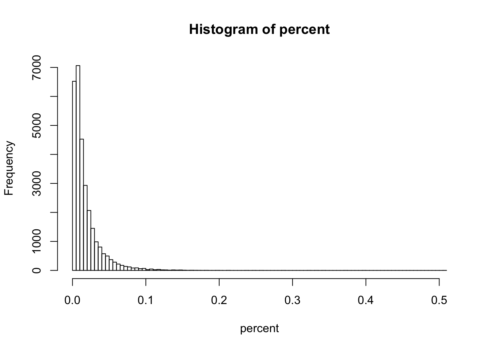
summary(percent)## Min. 1st Qu. Median Mean 3rd Qu. Max.
## 0.000000 0.005505 0.010990 0.017590 0.022050 0.506000summary(percent > 0)## Mode FALSE TRUE NA's
## logical 650 28642 0summary(percent > 0.05)## Mode FALSE TRUE NA's
## logical 27391 1901 0## Maybe less confusing measure: what is the difference in GC-content between genes (absolute difference)?
percent <- apply(gccontent.filtered[,1:3], 1, max) - apply(gccontent.filtered[,1:3], 1, min)
hist(percent, breaks = 100)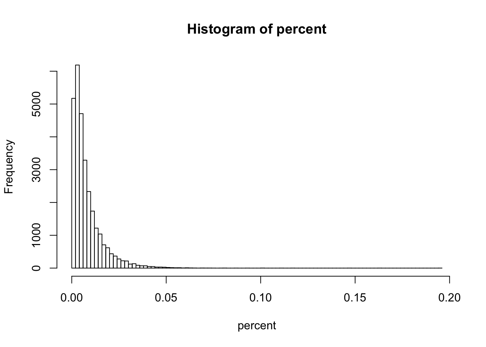
summary(percent) ## max 20% difference ## Min. 1st Qu. Median Mean 3rd Qu. Max.
## 0.000000 0.002635 0.005317 0.007943 0.010260 0.195600summary(percent > 0.05)## Mode FALSE TRUE NA's
## logical 29194 98 0The GC content of 1901 genes (6.3%) differ by more than 5% (of the less rich gene) between species.
The GC content of 98 genes have an absolute difference in GC-content of more than 5%.
# Filter the GC content list for genes we don't have GC content on
GC_content_complete <- as.data.frame(gccontent.genes[!is.na(gccontent.genes["humanGC"]),])
GC_content_complete_col <- as.data.frame(GC_content_complete[,1])
rownames(GC_content_complete_col) <- rownames(GC_content_complete)
colnames(GC_content_complete_col) <- c("HumanGC")
# Find the raw counts of the genes that have met the criteria for expression
inshared_lists = row.names(counts_genes) %in% rownames(counts_genes_filtered_3L)
inshared_lists_data <- as.data.frame(inshared_lists)
raw_counts_in <- cbind(counts_genes, inshared_lists_data)
raw_counts_in_2_of_4 <- as.data.frame(subset(raw_counts_in, inshared_lists_data == "TRUE"))
raw_counts_in_2_of_4_col <- as.data.frame(raw_counts_in_2_of_4[,1:47])
rownames(raw_counts_in_2_of_4_col) <- rownames(raw_counts_in_2_of_4)
dim(raw_counts_in_2_of_4_col)## [1] 16838 47# Find the GC content of the genes that have met the criteria for expression
inshared_lists = row.names(GC_content_complete_col) %in% rownames(raw_counts_in_2_of_4_col)
inshared_lists_data <- as.data.frame(inshared_lists)
gc_content_in <- cbind(GC_content_complete_col, inshared_lists_data)
gc_content_in_2_of_4 <- as.data.frame(subset(gc_content_in, inshared_lists_data == "TRUE"))
gc_content_in_2_of_4_col <- as.data.frame(gc_content_in_2_of_4[,1])
rownames(gc_content_in_2_of_4_col) <- rownames(gc_content_in_2_of_4)
colnames(gc_content_in_2_of_4_col) <- c("HumanGC")
dim(gc_content_in_2_of_4_col)## [1] 16616 1# Find the raw counts of the genes that have met the criteria for expression and that have a real-number GC count
inshared_lists = row.names(raw_counts_in_2_of_4_col) %in% rownames(gc_content_in_2_of_4_col)
inshared_lists_data <- as.data.frame(inshared_lists)
counts_in <- cbind(raw_counts_in_2_of_4_col, inshared_lists_data)
counts_in_2_of_4 <- as.data.frame(subset(counts_in, inshared_lists_data == "TRUE"))
counts_in_2_of_4_col <- as.data.frame(counts_in_2_of_4[,1:47])
rownames(counts_in_2_of_4_col) <- rownames(counts_in_2_of_4)
dim(counts_in_2_of_4_col)## [1] 16616 47# Make sure that the row names for the GC content and the raw counts are the same
summary(rownames(counts_in_2_of_4_col) %in% rownames(gc_content_in_2_of_4_col))## Mode TRUE NA's
## logical 16616 0The problem(s):
None of the EDAseq normalizations were deemed to be sufficiently aggressive.
There is a non-linear relationship between GC content and log2(read counts). We can see this illustrated here:
# plot(data[,2],data[,3], xlim = c(0, 20e5), ylim = c(0,8e4), main = "Read counts in individual versus total", ylab = "Read counts in 1 individual", xlab = "Total reads across all individuals") #plot x=GC, y=counts in ind/counts in all inds
# plot(data[,2],data[,3], main = "Read counts in individual versus total", ylab = "Read counts in 1 individual", xlab = "Total reads across all individuals") #plot x=GC, y=counts in ind/counts in all inds
counts <- counts_in_2_of_4_col$CH1
gc_content <- gc_content_in_2_of_4_col$HumanGC
counts <- counts_in_2_of_4_col[1]
gc_content <- gc_content_in_2_of_4_col[1]
plot(t(gc_content), t(counts), ylab = "Counts", xlab = "GC content", main = "Counts versus GC content for each gene in sample (C1H)")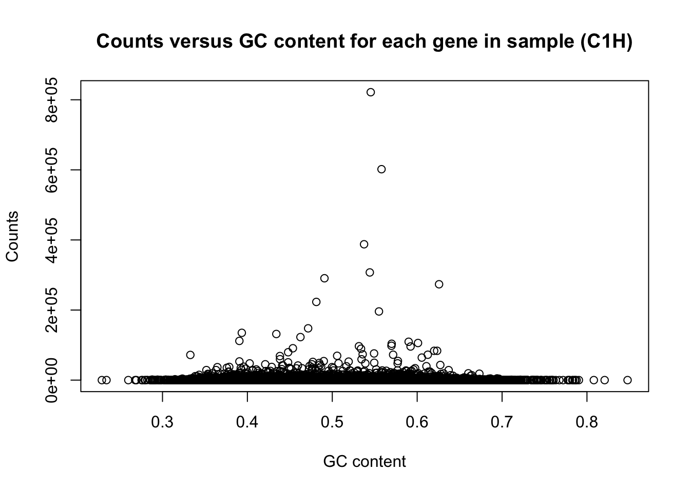
counts <- log2(counts_in_2_of_4_col[1])
gc_content <- gc_content_in_2_of_4_col[1]
plot(t(gc_content), t(counts), ylab = "Log2(counts)", xlab = "GC content", main = "Log2(counts) versus GC content for each gene in sample (C1H)")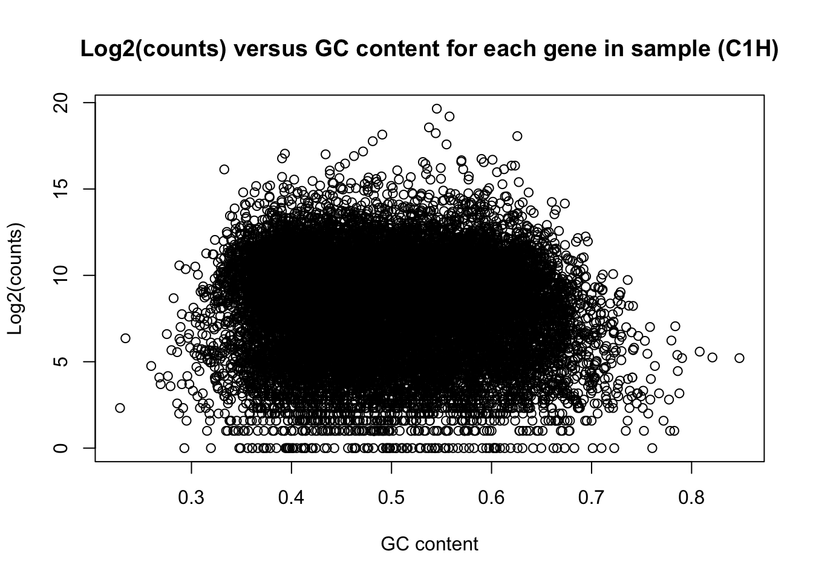
counts <- counts_in_2_of_4_col$C1H
total_counts <- rowSums(counts_in_2_of_4_col)
divide_counts <- counts / total_counts
# Comparison of all data versus subsetted data (large fraction for an individual)
check <- cbind(counts, total_counts)
check2 <- cbind(check, divide_counts)
check2 <- as.data.frame(check2)
total_counts <- check2[which(check2$divide_counts > 0.1), ]
total_counts <- as.data.frame(total_counts)
mean(check2$total_counts)## [1] 75878.85# 75878.85
mean(total_counts$total_counts)## [1] 115192.9#115192.9
median(check2$total_counts)## [1] 25143#23772
median(total_counts$total_counts)## [1] 14108# 14108
plot(t(gc_content), t(divide_counts), xlim = c(0.3, 0.7), ylim = c(0, 0.05), ylab = "Fraction of counts from one individual", xlab = "GC content", main = "Fraction of counts versus gene GC content in one individual (C1H)")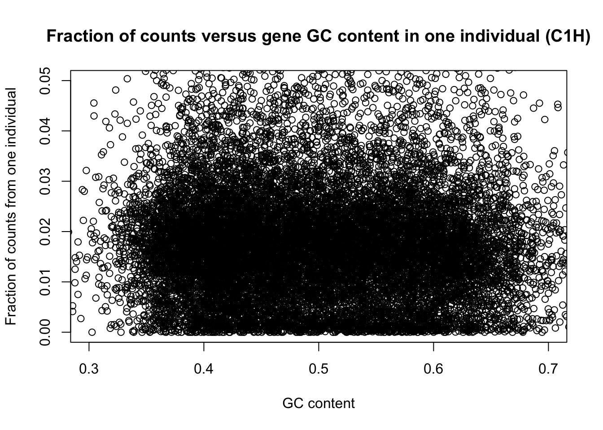
plot(t(gc_content), t(divide_counts), ylab = "Fraction of counts from one individual", xlab = "GC content", main = "Fraction of counts versus gene GC content in one individual (C1H)")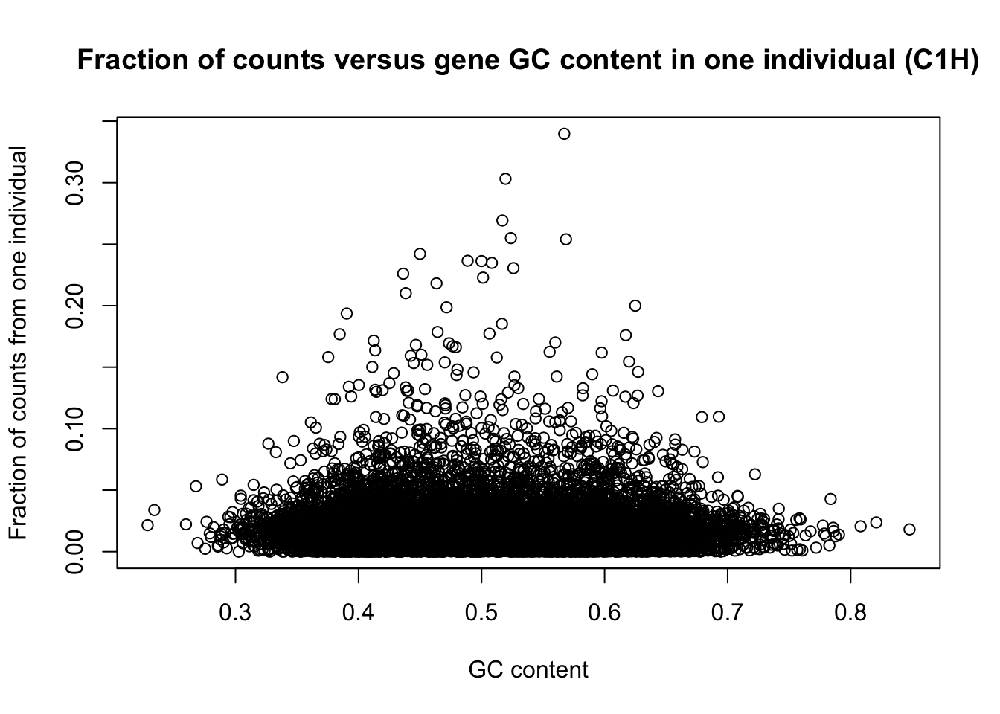
Because GC content is species-specific, we want a scheme that will allow us to incorporate species-specific information (unlike in the analysis above). At the same time, gene GC content and species are confounded. Therefore, we argue that it makes sense to make different
In RNA-seq experiments, a handful of highly expressed genes take up a large fraction of the total number of mapped reads. Different genes are highly expressed in different tissues. Also, there could be variation in the amount of highly expressed genes and the overall relationship between these and the other expressed genes. We need to adjust for total read depth.
Therefore, we will fit each spline for each tissue-species pair. Information from 4 samples (3 in the case of human hearts) will go into the information to fit the splines.
For more information about the method used for adjusting read depth and GC content, see pages 4-6 of the Supplementary Text and Figures from the following paper:
van de Geijn B, McVicker G, Gilad Y, Pritchard JK. WASP: allele-specific software for robust molecular quantitative trait locus discovery. Nat Methods. 2015 Sep 14. doi: 10.1038/nmeth.3582
# Get GC content for all 3 species for all of the genes that we have data for (not just the human GC content which we had before)
inshared_lists = row.names(GC_content_complete) %in% rownames(counts_in_2_of_4_col)
inshared_lists_data <- as.data.frame(inshared_lists)
gc_counts_in <- cbind(GC_content_complete, inshared_lists_data)
gc_counts_in_2_of_4 <- as.data.frame(subset(gc_counts_in, inshared_lists_data == "TRUE"))
gc_counts_in_2_of_4_col <- as.data.frame(gc_counts_in_2_of_4[,1:3])
rownames(gc_counts_in_2_of_4_col) <- rownames(gc_counts_in_2_of_4)
# Split the samples into the 12 tissue-species pairs and then attach the GC content so that it is in the correct format for the next step. Make the first row is also the second row (because the next step will read the first row as the header). Then save this file, as it will be run in the next section.
# Chimp hearts
# Subset the counts of genes for the chimp hearts
counts_chimp_hearts <- counts_in_2_of_4_col[,chimp_hearts]
# Find the total read depth for each gene
read_depth_total <- rowSums(counts_chimp_hearts)
# Make GC content the first column and read_depth_total for each gene the second column and then the raw counts for each individual
gc_counts_chimp_hearts <- cbind(gc_counts_in_2_of_4_col[,2], read_depth_total)
gc_counts_chimp_hearts <- cbind(gc_counts_chimp_hearts, counts_chimp_hearts)
# Add an extra row so there's not an issue with the headers
gc_counts_chimp_hearts <- rbind(gc_counts_chimp_hearts[1,], gc_counts_chimp_hearts)
# Look at the data
head(gc_counts_chimp_hearts)## V1 read_depth_total C1H C2H C3H C4H
## ENSG00000000003 0.4446018 2428 645 539 769 475
## ENSG000000000031 0.4446018 2428 645 539 769 475
## ENSG00000000419 0.4003512 5327 1559 1074 1303 1391
## ENSG00000000457 0.4308564 2495 641 597 626 631
## ENSG00000000460 0.3933759 288 77 66 76 69
## ENSG00000000938 0.5656566 2560 1329 121 796 314# Output this corrected file to the Desktop so that we can run it in Python (this command is commented out so that RMarkdown doesn't get confused when I try to load this to my personal site)
# write.table(gc_counts_chimp_hearts,file="/Users/LEB/Reg_Evo_Primates/ashlar-trial/data/GC_counts_chimp_hearts.txt",sep="\t", col.names = F, row.names = F)
# Repeat for all of the other 11 tissue-species pairs. Here, we will repeat this process for Chimp kidneys
counts_chimp_kidneys <- counts_in_2_of_4_col[,chimp_kidneys]
read_depth_total <- rowSums(counts_chimp_kidneys)
gc_counts_chimp_kidneys <- cbind(gc_counts_in_2_of_4_col[,2], read_depth_total)
gc_counts_chimp_kidneys <- cbind(gc_counts_chimp_kidneys, counts_chimp_kidneys)
gc_counts_chimp_kidneys <- rbind(gc_counts_chimp_kidneys[1,], gc_counts_chimp_kidneys)
head(gc_counts_chimp_kidneys)## V1 read_depth_total C1K C2K C3K C4K
## ENSG00000000003 0.4446018 10951 3217 2178 2966 2590
## ENSG000000000031 0.4446018 10951 3217 2178 2966 2590
## ENSG00000000419 0.4003512 4803 1337 1107 1267 1092
## ENSG00000000457 0.4308564 4813 1334 1262 1289 928
## ENSG00000000460 0.3933759 454 131 126 96 101
## ENSG00000000938 0.5656566 2095 507 584 653 351# write.table(gc_counts_chimp_kidneys,file="/Users/LEB/Reg_Evo_Primates/ashlar-trial/data/GC_counts_chimp_kidneys.txt",sep="\t", col.names = F, row.names = F)
# Chimp livers
counts_chimp_livers <- counts_in_2_of_4_col[,chimp_livers]
read_depth_total <- rowSums(counts_chimp_livers)
gc_counts_chimp_livers <- cbind(gc_counts_in_2_of_4_col[,2], read_depth_total)
gc_counts_chimp_livers <- cbind(gc_counts_chimp_livers, counts_chimp_livers)
gc_counts_chimp_livers <- rbind(gc_counts_chimp_livers[1,], gc_counts_chimp_livers)
head(gc_counts_chimp_livers)## V1 read_depth_total C1Li C2Li C3Li C4Li
## ENSG00000000003 0.4446018 20420 6687 5590 3349 4794
## ENSG000000000031 0.4446018 20420 6687 5590 3349 4794
## ENSG00000000419 0.4003512 4640 1336 1203 1295 806
## ENSG00000000457 0.4308564 5999 1304 1998 1373 1324
## ENSG00000000460 0.3933759 339 92 107 77 63
## ENSG00000000938 0.5656566 2526 743 896 560 327# write.table(gc_counts_chimp_livers,file="/Users/LEB/Reg_Evo_Primates/ashlar-trial/data/GC_counts_chimp_livers.txt",sep="\t", col.names = F, row.names = F)
# Chimp lungs
counts_chimp_lungs <- counts_in_2_of_4_col[,chimp_lungs]
read_depth_total <- rowSums(counts_chimp_lungs)
gc_counts_chimp_lungs <- cbind(gc_counts_in_2_of_4_col[,2], read_depth_total)
gc_counts_chimp_lungs <- cbind(gc_counts_chimp_lungs, counts_chimp_lungs)
gc_counts_chimp_lungs <- rbind(gc_counts_chimp_lungs[1,], gc_counts_chimp_lungs)
head(gc_counts_chimp_lungs)## V1 read_depth_total C1Lu C2Lu C3Lu C4Lu
## ENSG00000000003 0.4446018 5878 1436 1102 1835 1505
## ENSG000000000031 0.4446018 5878 1436 1102 1835 1505
## ENSG00000000419 0.4003512 6053 1433 1712 1512 1396
## ENSG00000000457 0.4308564 4950 1009 1476 1124 1341
## ENSG00000000460 0.3933759 678 159 189 136 194
## ENSG00000000938 0.5656566 30483 6027 12637 4470 7349# write.table(gc_counts_chimp_lungs,file="/Users/LEB/Reg_Evo_Primates/ashlar-trial/data/GC_counts_chimp_lungs.txt",sep="\t", col.names = F, row.names = F)
# Human hearts
counts_human_hearts <- counts_in_2_of_4_col[,human_hearts]
read_depth_total <- rowSums(counts_human_hearts)
gc_counts_human_hearts <- cbind(gc_counts_in_2_of_4_col[,1], read_depth_total)
gc_counts_human_hearts <- cbind(gc_counts_human_hearts, counts_human_hearts)
gc_counts_human_hearts <- rbind(gc_counts_human_hearts[1,], gc_counts_human_hearts)
head(gc_counts_human_hearts)## V1 read_depth_total H2H H3H H4H
## ENSG00000000003 0.4438938 816 225 124 467
## ENSG000000000031 0.4438938 816 225 124 467
## ENSG00000000419 0.3985953 3246 855 573 1818
## ENSG00000000457 0.4335337 655 186 231 238
## ENSG00000000460 0.3956459 149 65 10 74
## ENSG00000000938 0.5666341 1735 828 182 725# write.table(gc_counts_human_hearts,file="/Users/LEB/Reg_Evo_Primates/ashlar-trial/data/GC_counts_human_hearts.txt",sep="\t", col.names = F, row.names = F)
# Human kidneys
counts_human_kidneys <- counts_in_2_of_4_col[,human_kidneys]
read_depth_total <- rowSums(counts_human_kidneys)
gc_counts_human_kidneys <- cbind(gc_counts_in_2_of_4_col[,1], read_depth_total)
gc_counts_human_kidneys <- cbind(gc_counts_human_kidneys, counts_human_kidneys)
gc_counts_human_kidneys <- rbind(gc_counts_human_kidneys[1,], gc_counts_human_kidneys)
head(gc_counts_human_kidneys)## V1 read_depth_total H1K H2K H3K H4K
## ENSG00000000003 0.4438938 14429 4252 2365 4810 3002
## ENSG000000000031 0.4438938 14429 4252 2365 4810 3002
## ENSG00000000419 0.3985953 6270 1755 706 2041 1768
## ENSG00000000457 0.4335337 2544 711 286 931 616
## ENSG00000000460 0.3956459 734 248 63 280 143
## ENSG00000000938 0.5666341 1554 608 214 220 512#write.table(gc_counts_human_kidneys,file="/Users/LEB/Reg_Evo_Primates/ashlar-trial/data/GC_counts_human_kidneys.txt",sep="\t", col.names = F, row.names = F)
# Human livers
counts_human_livers <- counts_in_2_of_4_col[,human_livers]
read_depth_total <- rowSums(counts_human_livers)
gc_counts_human_livers <- cbind(gc_counts_in_2_of_4_col[,1], read_depth_total)
gc_counts_human_livers <- cbind(gc_counts_human_livers, counts_human_livers)
gc_counts_human_livers <- rbind(gc_counts_human_livers[1,], gc_counts_human_livers)
head(gc_counts_human_livers)## V1 read_depth_total H1Li H2Li H3Li H4Li
## ENSG00000000003 0.4438938 8817 2100 2024 2918 1775
## ENSG000000000031 0.4438938 8817 2100 2024 2918 1775
## ENSG00000000419 0.3985953 4723 1492 1162 1018 1051
## ENSG00000000457 0.4335337 2228 682 444 436 666
## ENSG00000000460 0.3956459 1118 699 128 129 162
## ENSG00000000938 0.5666341 4713 491 1291 732 2199#write.table(gc_counts_human_livers,file="/Users/LEB/Reg_Evo_Primates/ashlar-trial/data/GC_counts_human_livers.txt",sep="\t", col.names = F, row.names = F)
# Human lungs
counts_human_lungs <- counts_in_2_of_4_col[,human_lungs]
read_depth_total <- rowSums(counts_human_lungs)
gc_counts_human_lungs <- cbind(gc_counts_in_2_of_4_col[,1], read_depth_total)
gc_counts_human_lungs <- cbind(gc_counts_human_lungs, counts_human_lungs)
gc_counts_human_lungs <- rbind(gc_counts_human_lungs[1,], gc_counts_human_lungs)
head(gc_counts_human_lungs)## V1 read_depth_total H1Lu H2Lu H3Lu H4Lu
## ENSG00000000003 0.4438938 4177 956 690 1427 1104
## ENSG000000000031 0.4438938 4177 956 690 1427 1104
## ENSG00000000419 0.3985953 6296 1566 1513 1175 2042
## ENSG00000000457 0.4335337 2818 632 700 583 903
## ENSG00000000460 0.3956459 1005 278 223 200 304
## ENSG00000000938 0.5666341 30956 6564 4767 4395 15230# write.table(gc_counts_human_lungs,file="/Users/LEB/Reg_Evo_Primates/ashlar-trial/data/GC_counts_human_lungs.txt",sep="\t", col.names = F, row.names = F)
# Rhesus hearts
counts_rhesus_hearts <- counts_in_2_of_4_col[,rhesus_hearts]
read_depth_total <- rowSums(counts_rhesus_hearts)
gc_counts_rhesus_hearts <- cbind(gc_counts_in_2_of_4_col[,3], read_depth_total)
gc_counts_rhesus_hearts <- cbind(gc_counts_rhesus_hearts, counts_rhesus_hearts)
gc_counts_rhesus_hearts <- rbind(gc_counts_rhesus_hearts[1,], gc_counts_rhesus_hearts)
head(gc_counts_rhesus_hearts)## V1 read_depth_total R1H R2H R3H R4H
## ENSG00000000003 0.4429651 1688 270 399 500 519
## ENSG000000000031 0.4429651 1688 270 399 500 519
## ENSG00000000419 0.3945993 2965 582 635 996 752
## ENSG00000000457 0.4289068 1403 257 321 427 398
## ENSG00000000460 0.3939919 183 32 43 71 37
## ENSG00000000938 0.5714286 390 47 81 165 97# write.table(gc_counts_rhesus_hearts,file="/Users/LEB/Reg_Evo_Primates/ashlar-trial/data/GC_counts_rhesus_hearts.txt",sep="\t", col.names = F, row.names = F)
# Rhesus kidneys
counts_rhesus_kidneys <- counts_in_2_of_4_col[,rhesus_kidneys]
read_depth_total <- rowSums(counts_rhesus_kidneys)
gc_counts_rhesus_kidneys <- cbind(gc_counts_in_2_of_4_col[,3], read_depth_total)
gc_counts_rhesus_kidneys <- cbind(gc_counts_rhesus_kidneys, counts_rhesus_kidneys)
gc_counts_rhesus_kidneys <- rbind(gc_counts_rhesus_kidneys[1,], gc_counts_rhesus_kidneys)
head(gc_counts_rhesus_kidneys)## V1 read_depth_total R1K R2K R3K R4K
## ENSG00000000003 0.4429651 15120 2669 3727 4005 4719
## ENSG000000000031 0.4429651 15120 2669 3727 4005 4719
## ENSG00000000419 0.3945993 4226 917 875 1151 1283
## ENSG00000000457 0.4289068 3860 711 945 983 1221
## ENSG00000000460 0.3939919 330 64 66 102 98
## ENSG00000000938 0.5714286 604 129 170 134 171# write.table(gc_counts_rhesus_kidneys,file="/Users/LEB/Reg_Evo_Primates/ashlar-trial/data/GC_counts_rhesus_kidneys.txt",sep="\t", col.names = F, row.names = F)
# Rhesus livers
counts_rhesus_livers <- counts_in_2_of_4_col[,rhesus_livers]
read_depth_total <- rowSums(counts_rhesus_livers)
gc_counts_rhesus_livers <- cbind(gc_counts_in_2_of_4_col[,3], read_depth_total)
gc_counts_rhesus_livers <- cbind(gc_counts_rhesus_livers, counts_rhesus_livers)
gc_counts_rhesus_livers <- rbind(gc_counts_rhesus_livers[1,], gc_counts_rhesus_livers)
head(gc_counts_rhesus_livers)## V1 read_depth_total R1Li R2Li R3Li R4Li
## ENSG00000000003 0.4429651 23399 4046 7517 5547 6289
## ENSG000000000031 0.4429651 23399 4046 7517 5547 6289
## ENSG00000000419 0.3945993 4233 711 995 1197 1330
## ENSG00000000457 0.4289068 3277 443 859 773 1202
## ENSG00000000460 0.3939919 201 11 53 50 87
## ENSG00000000938 0.5714286 1335 175 240 234 686# write.table(gc_counts_rhesus_livers,file="/Users/LEB/Reg_Evo_Primates/ashlar-trial/data/GC_counts_rhesus_livers.txt",sep="\t", col.names = F, row.names = F)
# Rhesus lungs
counts_rhesus_lungs <- counts_in_2_of_4_col[,rhesus_lungs]
read_depth_total <- rowSums(counts_rhesus_lungs)
gc_counts_rhesus_lungs <- cbind(gc_counts_in_2_of_4_col[,3], read_depth_total)
gc_counts_rhesus_lungs <- cbind(gc_counts_rhesus_lungs, counts_rhesus_lungs)
gc_counts_rhesus_lungs <- rbind(gc_counts_rhesus_lungs[1,], gc_counts_rhesus_lungs)
head(gc_counts_rhesus_lungs)## V1 read_depth_total R1Lu R2Lu R3Lu R4Lu
## ENSG00000000003 0.4429651 7999 1928 2005 2088 1978
## ENSG000000000031 0.4429651 7999 1928 2005 2088 1978
## ENSG00000000419 0.3945993 5182 945 1173 1479 1585
## ENSG00000000457 0.4289068 5521 913 1531 1710 1367
## ENSG00000000460 0.3939919 1017 178 209 284 346
## ENSG00000000938 0.5714286 17715 2922 3817 5482 5494# write.table(gc_counts_rhesus_lungs,file="/Users/LEB/Reg_Evo_Primates/ashlar-trial/data/GC_counts_rhesus_lungs.txt",sep="\t", col.names = F, row.names = F)To execute this, run a Python script that uses parts of the Python script found here https://github.com/bmvdgeijn/WASP/blob/master/CHT/update_total_depth.py
From this, we will get coefficients for the quartic function for each individual.
# Here's a file with GC content
GC_read_depth_coefficients <- read.csv("~/Reg_Evo_Primates/ashlar-trial/data/GC_read_depth_coefficients.csv", header=FALSE)
coefs <- GC_read_depth_coefficients[,2:11]
# Average gc content
avg_chimp_gc <- mean(gc_counts_chimp_hearts[,1])
# Here's a file with the GC content and all of the counts for chimps
tot <- cbind(gc_counts_chimp_hearts[-2, 1:2], gc_counts_chimp_hearts[-2, 2], gc_counts_chimp_hearts[-2, 2], gc_counts_chimp_hearts[-2, 2], gc_counts_chimp_kidneys[-2,2], gc_counts_chimp_kidneys[-2,2], gc_counts_chimp_kidneys[-2,2], gc_counts_chimp_kidneys[-2,2], gc_counts_chimp_livers[-2,2], gc_counts_chimp_livers[-2,2], gc_counts_chimp_livers[-2,2], gc_counts_chimp_livers[-2,2], gc_counts_chimp_lungs[-2,2], gc_counts_chimp_lungs[-2,2], gc_counts_chimp_lungs[-2,2], gc_counts_chimp_lungs[-2,2])
dim(tot)## [1] 16616 17# Find the updated gene counts for the chimps
updated_chimp_gc_avg <- array(NA, dim = c(16616, 16))
updated_chimp_gc_all <- array(NA, dim = c(16616, 16))
for (j in 1:16616){
for (i in 2:17){
updated_chimp_gc_avg[j,i-1] <- exp(coefs[i-1,1] + avg_chimp_gc*coefs[i-1,2] + ((avg_chimp_gc)^2)*coefs[i-1,3] + ((avg_chimp_gc)^3)*coefs[i-1,4] + ((avg_chimp_gc)^4)*coefs[i-1,5])
updated_chimp_gc_all[j,i-1] <- exp(coefs[i-1,1] + tot[j,1]*coefs[i-1,2] + ((tot[j,1])^2)*coefs[i-1,3] + ((tot[j,1])^3)*coefs[i-1,4] + ((tot[j,1])^4)*coefs[i-1,5])
#updated_chimp_gene_counts[j,i-1] <- exp((coefs[i-1,1] + tot[j,1]*coefs[i-1,2] + ((tot[j,1])^2)*coefs[i-1,3] + ((tot[j,1])^3)*coefs[i-1,4] + ((tot[j,1])^4)*coefs[i-1,5]))*(0 + tot[j,i]*coefs[i-1,7] + ((tot[j, i])^2)*coefs[i-1,8] + ((tot[j, i])^3)*coefs[i-1,9] + ((tot[j, i])^4)*coefs[i-1,10])
}
}
# Calculate the adjustment factor
gc_adj <- updated_chimp_gc_avg / updated_chimp_gc_all
# Combine the counts for the chimps
counts_chimps <- cbind(gc_counts_chimp_hearts[-2,3:6], gc_counts_chimp_kidneys[-2,3:6], gc_counts_chimp_livers[-2,3:6], gc_counts_chimp_lungs[-2,3:6])
dim(counts_chimps)## [1] 16616 16# Calculate the new counts
gc_counts_chimps = counts_chimps*gc_adj
# Plots comparing raw and adjusted counts
plot(gc_counts_chimp_hearts[-2,1], gc_counts_chimp_hearts[-2,3], xlab = "GC content", ylab = "Observed raw counts")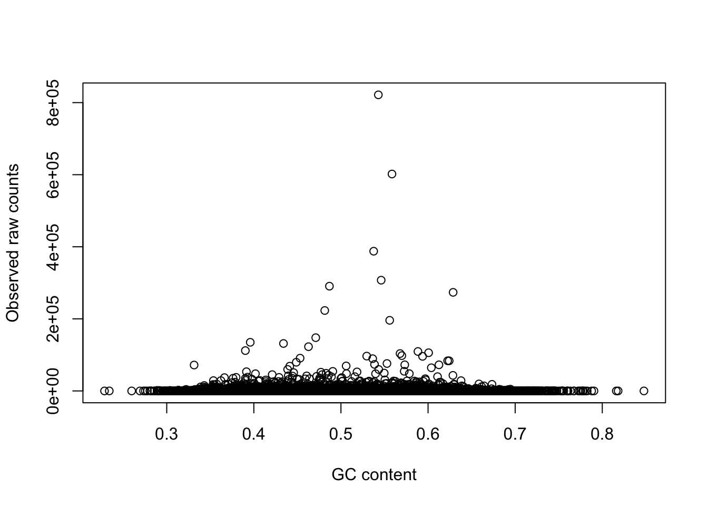
plot(gc_counts_chimp_hearts[-2,1], gc_counts_chimps[,1], xlab = "GC content", ylab = "Adjusted raw counts")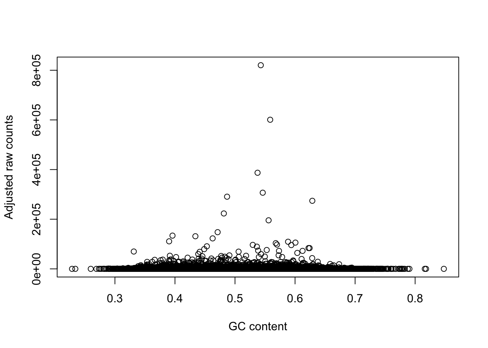
plot(gc_counts_chimp_hearts[-2,3], gc_counts_chimps[,1], ylab = "Expected counts", xlab = "Observed raw counts")
abline(a = 0, b = 1, col = "red", lwd = 3)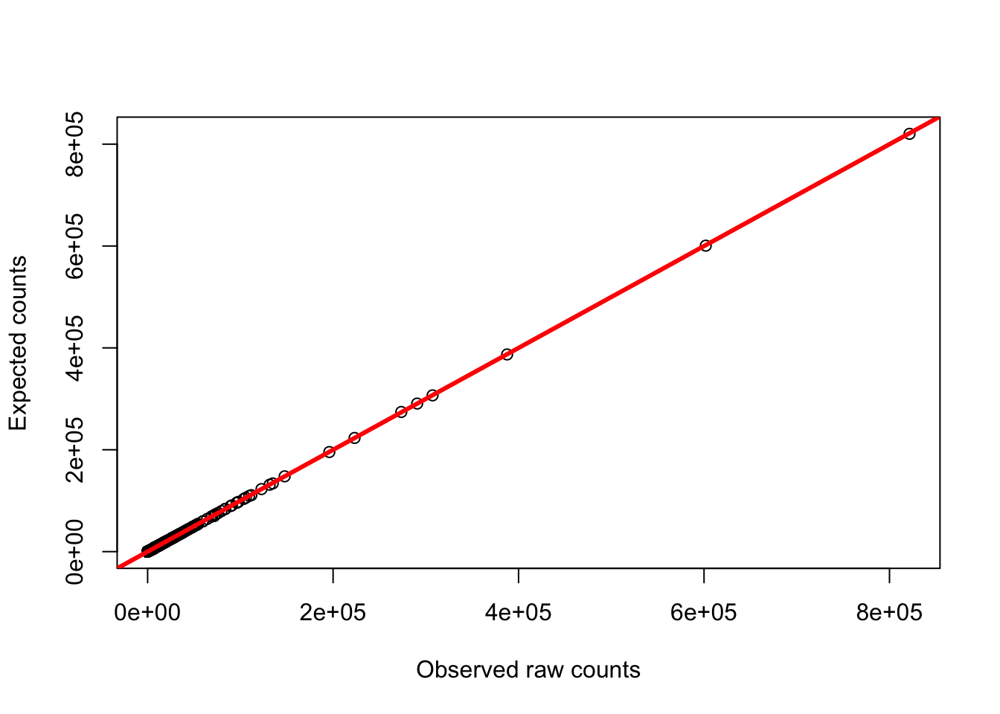
# Now repeat with humans
# Average gc content
avg_human_gc <- mean(gc_counts_human_hearts[,1])
# Here's a file with the GC content and all of the counts for chimps
tot <- cbind(gc_counts_human_hearts[-2, 1:2], gc_counts_human_hearts[-2, 2], gc_counts_human_hearts[-2, 2], gc_counts_human_kidneys[-2,2], gc_counts_human_kidneys[-2,2], gc_counts_human_kidneys[-2,2], gc_counts_human_kidneys[-2,2], gc_counts_human_livers[-2,2], gc_counts_human_livers[-2,2], gc_counts_human_livers[-2,2], gc_counts_human_livers[-2,2], gc_counts_human_lungs[-2,2], gc_counts_human_lungs[-2,2], gc_counts_human_lungs[-2,2], gc_counts_human_lungs[-2,2])
dim(tot)## [1] 16616 16# Find the updated gene counts for the chimps
updated_human_gc_avg <- array(NA, dim = c(16616, 16))
updated_human_gc_all <- array(NA, dim = c(16616, 16))
for (j in 1:16616){
for (i in 17:31){
updated_human_gc_avg[j,i-16] <- exp(coefs[i,1] + avg_human_gc*coefs[i,2] + ((avg_human_gc)^2)*coefs[i,3] + ((avg_human_gc)^3)*coefs[i,4] + ((avg_human_gc)^4)*coefs[i,5])
updated_human_gc_all[j,i-16] <- exp(coefs[i,1] + tot[j,1]*coefs[i,2] + ((tot[j,1])^2)*coefs[i,3] + ((tot[j,1])^3)*coefs[i,4] + ((tot[j,1])^4)*coefs[i,5])
#updated_chimp_gene_counts[j,i-1] <- exp((coefs[i-1,1] + tot[j,1]*coefs[i-1,2] + ((tot[j,1])^2)*coefs[i-1,3] + ((tot[j,1])^3)*coefs[i-1,4] + ((tot[j,1])^4)*coefs[i-1,5]))*(0 + tot[j,i]*coefs[i-1,7] + ((tot[j, i])^2)*coefs[i-1,8] + ((tot[j, i])^3)*coefs[i-1,9] + ((tot[j, i])^4)*coefs[i-1,10])
}
}
# Calculate the adjustment factor
gc_adj <- updated_human_gc_avg / updated_human_gc_all
# Combine the counts for the humans
counts_humans <- cbind(gc_counts_human_hearts[-2,3:5], gc_counts_human_kidneys[-2,3:6], gc_counts_human_livers[-2,3:6], gc_counts_human_lungs[-2,3:6])
dim(counts_humans)## [1] 16616 15# Calculate the new counts
gc_counts_humans = counts_humans*gc_adj
# Plot to see the relationship between the raw counts and the GC adjusted counts
plot(gc_counts_human_hearts[-2,1], gc_counts_human_hearts[-2,3], xlab = "GC content", ylab = "Observed raw counts")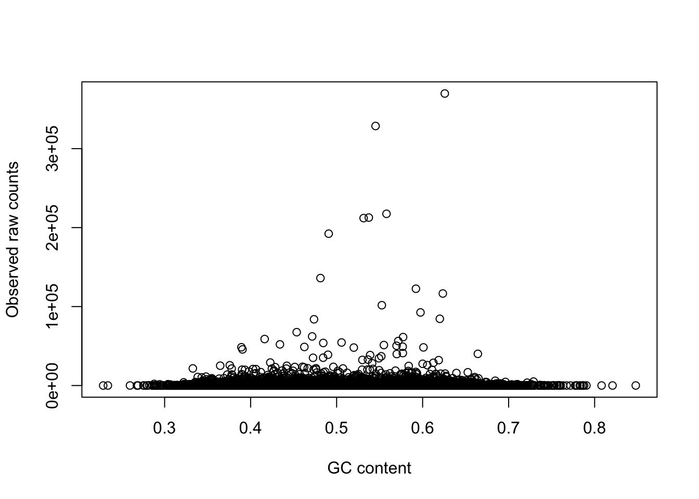
plot(gc_counts_human_hearts[-2,1], gc_counts_humans[,1], xlab = "GC content", ylab = "Adjusted raw counts")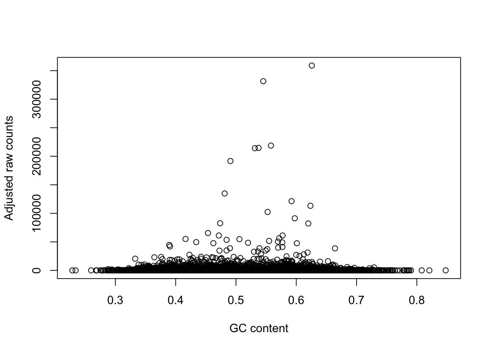
plot(gc_counts_human_hearts[-2,3], gc_counts_humans[,1], ylab = "Expected counts", xlab = "Observed raw counts")
abline(a = 0, b = 1, col = "red", lwd = 3)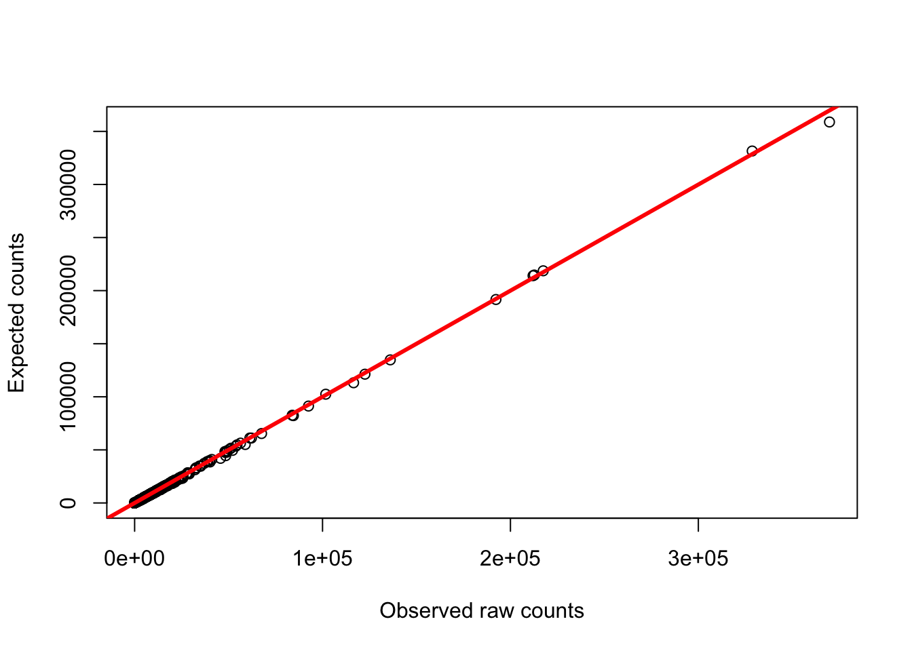
# Now repeat for rhesus
# Average gc content
avg_rhesus_gc <- mean(gc_counts_rhesus_hearts[,1])
# Here's a file with the GC content and all of the counts for chimps
tot <- cbind(gc_counts_rhesus_hearts[-2, 1:2], gc_counts_rhesus_hearts[-2, 2], gc_counts_rhesus_hearts[-2, 2], gc_counts_rhesus_hearts[-2, 2], gc_counts_rhesus_kidneys[-2,2], gc_counts_rhesus_kidneys[-2,2], gc_counts_rhesus_kidneys[-2,2], gc_counts_rhesus_kidneys[-2,2], gc_counts_rhesus_livers[-2,2], gc_counts_rhesus_livers[-2,2], gc_counts_rhesus_livers[-2,2], gc_counts_rhesus_livers[-2,2], gc_counts_rhesus_lungs[-2,2], gc_counts_rhesus_lungs[-2,2], gc_counts_rhesus_lungs[-2,2], gc_counts_rhesus_lungs[-2,2])
dim(tot)## [1] 16616 17# Find the updated gene counts for the chimps
updated_rhesus_gc_avg <- array(NA, dim = c(16616, 16))
updated_rhesus_gc_all <- array(NA, dim = c(16616, 16))
for (j in 1:16616){
for (i in 32:47){
updated_rhesus_gc_avg[j,i-31] <- exp(coefs[i-1,1] + avg_rhesus_gc*coefs[i-1,2] + ((avg_rhesus_gc)^2)*coefs[i-1,3] + ((avg_rhesus_gc)^3)*coefs[i-1,4] + ((avg_rhesus_gc)^4)*coefs[i-1,5])
updated_rhesus_gc_all[j,i-31] <- exp(coefs[i-1,1] + tot[j,1]*coefs[i-1,2] + ((tot[j,1])^2)*coefs[i-1,3] + ((tot[j,1])^3)*coefs[i-1,4] + ((tot[j,1])^4)*coefs[i-1,5])
}
}
# Calculate the adjustment factor
gc_adj <- updated_rhesus_gc_avg / updated_rhesus_gc_all
# Combine the counts
counts_rhesus <- cbind(gc_counts_rhesus_hearts[-2,3:6], gc_counts_rhesus_kidneys[-2,3:6], gc_counts_rhesus_livers[-2,3:6], gc_counts_rhesus_lungs[-2,3:6])
dim(counts_rhesus)## [1] 16616 16# Calculate the new counts
gc_counts_rhesus = counts_rhesus*gc_adj
# Plots comparing raw and adjusted counts
plot(gc_counts_rhesus_hearts[-2,1], gc_counts_rhesus_hearts[-2,3], xlab = "GC content", ylab = "Observed raw counts")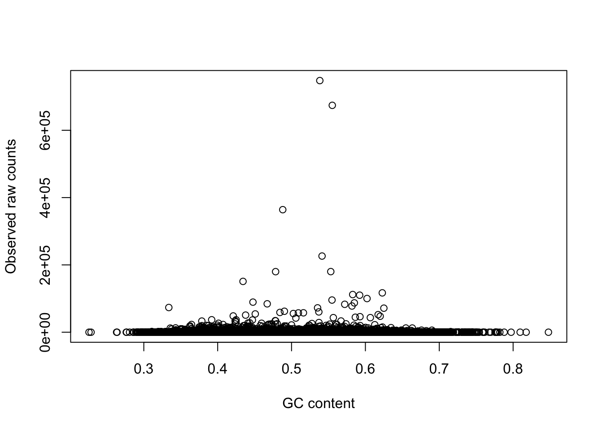
plot(gc_counts_rhesus_hearts[-2,1], gc_counts_rhesus[,1], xlab = "GC content", ylab = "Adjusted raw counts")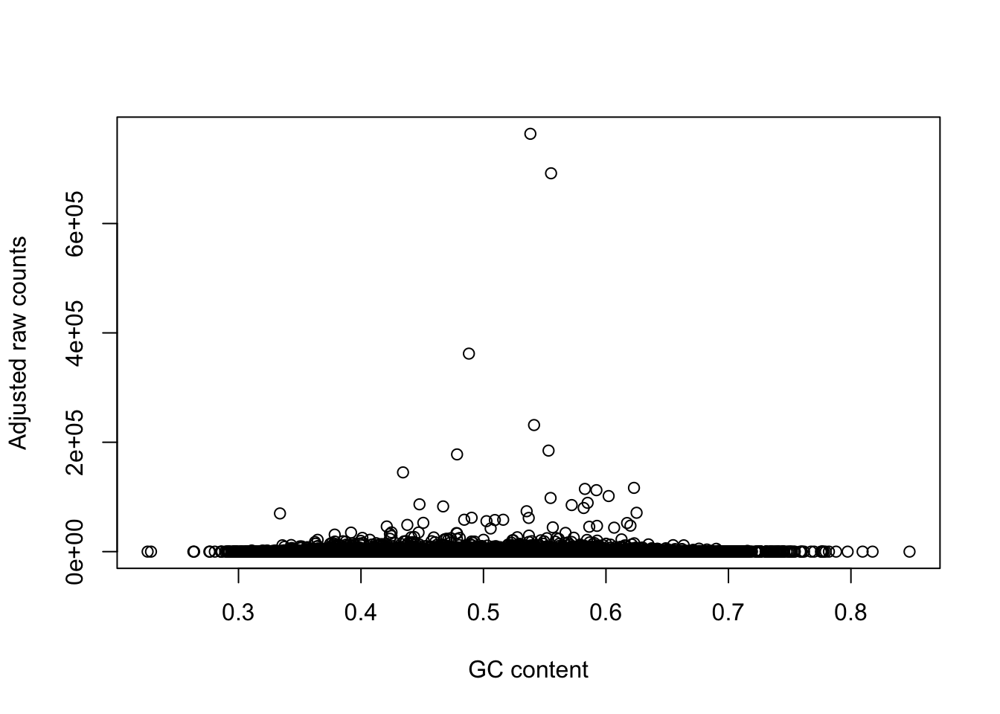
plot(gc_counts_rhesus_hearts[-2,3], gc_counts_rhesus[,1], ylab = "Expected counts", xlab = "Observed raw counts")
abline(a = 0, b = 1, col = "red", lwd = 3)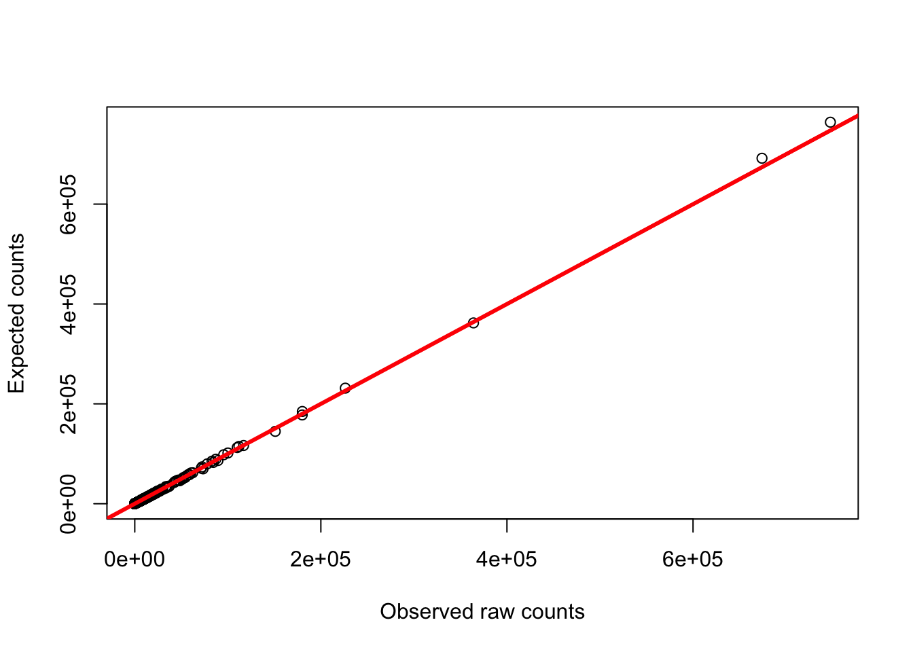
# Combine the samples in the same order as before (all chimpanzee 1 samples together, etc. )
chimps <- c(1, 5, 9, 13, 2, 6, 10, 14, 3, 7, 11, 15, 4, 8, 12, 16)
humans <- c(4, 8, 12, 1, 5, 9, 13, 2, 6, 10, 14, 3, 7, 11, 15)
counts_genes_gc <- cbind(gc_counts_chimps[, chimps], gc_counts_humans[ ,humans], gc_counts_rhesus[, chimps])
# Write a table with the GC-normalized counts
# write.table(counts_genes_gc,file="/Users/LEB/Reg_Evo_Primates/ashlar-trial/data/gene_counts_with_gc_correction.txt",sep="\t", col.names = T, row.names = T)To do: Show that orthologous gene length (and exon length) is the same/similar across the different species and therefore we did not correct for it in the analysis.